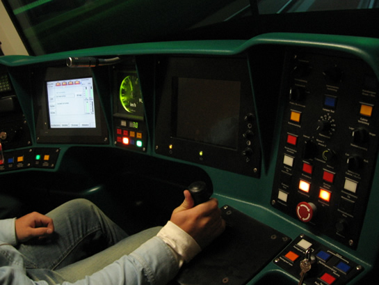

Update metrosimulator en overig nieuws
- zondag 07 december 2008 18:20
- Geschreven door Simon
De RET beschikt alweer een geruime tijd over een moderne metrosimulator, die zich bevindt in de ondergrondse dienstruimte aan de zuidelijke zijde van metrostation Wilhelminaplein. De simulator wordt onder andere gebruikt voor het bijspijkeren van de kennis van ervaren bestuurders. Zo kunnen ze extra oefenen op omstandigheden die maar af en toe voorkomen, zoals brandmeldingen en aanrijdingen. Retmetro.nl ontving enige foto's en toelichting over de werking van de simulator.
Het weer kan met een paar muisklikken worden veranderd. Er kan een scenario worden gedraaid, waar bij een bestuurder te maken krijgt met een aantal voorgeprogrammeerde storingen of andere situaties. Of de instructeur kan tijdens de virtuele rit de bestuurder "bezig houden" met onvoorziene omstandigheden. Regelmatig worden er ook extra opties aan de simulator toegevoegd, zoals meer verschillende calamiteiten. Ook worden er af en toe nog kleine foutjes uitgehaald, zodat het realiteitsgehalte nog groter wordt.
Maar ook voor het opleiden van nieuwe bestuurders is de simulator een uitkomst. Momenteel moeten nieuwe bestuurders minstens 21 dagen hebben "lesgereden" voordat ze alleen de baan op mogen, in de toekomst kan dat 16 dagen worden, afhankelijk van de bestuurder. Dit wordt mede mogelijk gemaakt doordat het aantal leermomenten in één "les" in de simulator vele malen groter is dan in de werkelijke metro, waarbij er slechts in beperkte mate kan worden geoefend op onvoorziene omstandigheden. Daarnaast kunnen er meer bestuurders worden opgeleid in een kortere tijd, wat efficiënter is.
De metrosimulator bestaat uit een volwaardige bestuurderscabine van een SG2/1, het modernste type metro/sneltram van de Rotterdamse metro. Drie grote beamers projecteren een 120 graden brede projectie van de omgeving, zoals gezien vanuit de cabine. De cabine zelf is, net als een flight simulator, beweegbaar door middel van pneumatische installaties, die het schommelen en schokken van het rijtuig nabootsen.
De simulator is geproduceerd door FCS Control Systems, een aftakking van de voormalige vliegtuigenfabrikant Fokker. In geval van storingen is er een directe modemverbinding met de leverancier van de simulator in het Franse Grenoble. Zo kan er direct online hulp worden geboden en kan het eventuele euvel vlot verholpen worden. Het Franse bedrijf Corys verzorgt de simulatorsoftware.
 .
.
De simulator van buitenaf gezien, zwartgele kettingen markeren het "verboden gebied" wanneer de simulator in gebruik is.
Detailfoto van de mechanische installatie, die de bewegingen nabootst.
De gehele cabine kan over de lengte van de geleiderails heen en weer bewegen.
Geheel links bevindt zich de ingang van de simulator, er is zowel een schuifhek als de echte cabinedeur van de "5401".

De simulator beschikt over een volledig ingerichte cabine van een SG2/1.
Vanuit de bestuurdersstoel ziet het er uiteraard realistischer uit. Het ATS-sein is geel, kruising Hesseplaats wordt genaderd.
Een blik in de instructieruimte, met links diverse computers en rechts de "lesruimte".
Bestuurders die deelnemen aan de lessen kijken op de drie kleine schermen naar hoe hun collega het doet, de instructeur kijkt naar het grote scherm. In de toekomst wordt de ruimte dusdanig ingericht dat de leerlingen ook naar het grote scherm kijken.
Een blik op het grote scherm, waarop men kan zien wat de bestuurder in de simulator ziet; rechts de "Centrale Verkeersleiding", waar de instructeur de simulator mee kan programmeren.
Met de microfoon kan de bestuurder in de simulator toe worden gesproken door de instructeur, zowel via de mobilofoon als via de gewone luidsprekers in de cabine.
Metrostation Wilhelminaplein heeft nog extra vrije ruimte, waar in de toekomst mogelijk nog een simulator kan worden opgezet, bijvoorbeeld voor Randstadrail.
Tramsimulator
Enige tijd geleden is ook de tramsimulator in gebruik genomen. Deze bestaat uit een eveneens cabine van een Citadistram, het nieuwste type tram dat Rotterdam kent. Deze beschikt niet over pneumatische installaties die voor beweging zorgen, maar is wel een goed middel om de vaardigheden van trambestuurders te verbeteren. De simulator beschikt nu al over tramroutes die in werkelijkheid nog niet zijn opgeleverd, zoals de Schiedam-Vlaardingenlijn. RET-medewerkers maken foto's van de omgeving en sturen die op naar de simulatorfabrikant in Grenoble, die vervolgens de route programmeert.
Naast de metro- en tramsimulator bevinden zich nog meer leslokalen in de dienstruimtes van station Wilhelminaplein. Zo is er ook een routeverkenningsinstallatie, een sterk vereenvoudigde metrosimulator met een eenvoudige stuurtafel met beamer. Deze werd gebruikt door de metrobestuurders om de Beneluxlijn alvast te verkennen, lang voordat deze op 4 november 2002 in gebruik werd genomen.
Net als bij het behalen van een autorijbewijs, is er een praktijkgedeelte en een theoriegedeelte bij het behalen van een rijbevoegdheid. Het theoriegedeelte wordt geëxamineerd op computers, die in een computerlokaal worden afgenomen. Deze manier is eveneens tijd- en kostenbesparend, de uitslag is namelijk zeer snel bekend.
 Website FCS Control Systems
Website FCS Control Systems
 Website Corys
Website Corys
Overlast als gevolg van storm
Afgelopen vrijdag vond er een wolkbreuk plaats boven Rotterdam, met fel onweer en hagel tot gevolg. Het openbaar vervoer in de stad ondervond hieraan enige hinder. Zo reden er in de omgeving van het Oostplein als gevolg van blikseminslag geen trams. Sommige ondergrondse winkels van metrostation Beurs kregen enige last van wateroverlast. De loopband in de onlangs geopende voetgangerstunnel in station Wilhelminaplein werd stilgezet om kortsluiting te voorkomen.